Script 00001D0E

――はい、ありがとうございました！
それでは次のコーナー、火曜のこの時間は『この道、我、達人！』です。
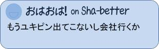
さあ、今日はどのような達人が登場するのでありましょうか。
今回はスタジオを飛び出し、生中継でお届けします。
現場のゆきちゃん！？

「はーい！ 私、新橋ゆき乃は引き続き、こちら、葛飾区の公園を取材しています！
今日は私が今週の達人をご紹介したいと思います！
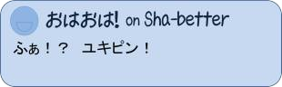
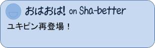
今日の達人は、公園のすぐ近くの建物、この中にいるということなんですが――」
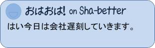
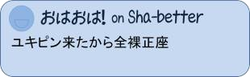
――なんだか、ちょっと不気味な建物ですねえ……。
「この怪しげな建物の中にいる、今週の達人は誰なのか。 お邪魔してみたいと思います」

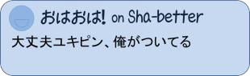
「えっと……おはようございまーす。
どちらにいらっしゃるのかな？
ジャポニカテレビの新橋ゆき乃と申しまーす」
――薄暗いですねえ。もしかして、霊媒師か何かでしょうか……。
「お、ごらんください、あちらに仮面をかぶった女性が1人、座っていますよ」
「おはようございます。あなたが今週の達人でしょうか！？」
「おはようございます。 はい、私が今週の達人…… ってほど大したもんじゃないけど、占い師のステラ優子と申します」
「占い師！」
――占い師！
「おはようございます。 はい、私が今週の達人…… ってほど大したもんじゃないけど、占い師のステラ優子と申します」
「占い師！」
――占い師！
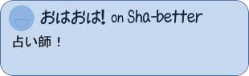
「ステラ優子さんって、有名人じゃないですか！？」
「いえいえ、ちょっと雑誌に出るくらいですよ」
「私、雑誌で拝見したことありますよ！ 確か人相学の権威って言われているとか」
「いえいえ、ちょっと雑誌に出るくらいですよ」
「私、雑誌で拝見したことありますよ！ 確か人相学の権威って言われているとか」
「そんな大げさなものじゃないですよ。 適当に人の顔を見て適当に言ったことがたまたま当たっているだけです」
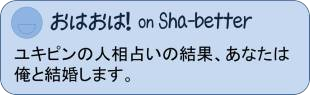
「いやいや、適当でここまで著名な占い師になんて。
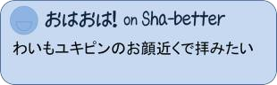
今日は、私の人相を見ていただけるということなんですが――」
「はいはい、じゃあこちらに掛けてください。 お姉さんは、どんなことを聞きたい？ 恋愛、仕事、金運、何でもいいよ」
「えっとじゃあ……。 これからのお仕事はどうなりそうでしょうか？」
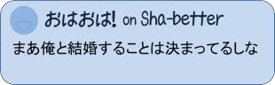
「仕事ね。じゃあ、こっちを見て」
「はい」
「…………」
「…………」
――…………。
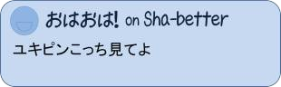
「お姉さんの仕事が順調なのは世間様が知っているだろうけど、それはあくまで世間様の評価。
自分自身では納得していない部分が多いんじゃないかい？」
「私が納得していない部分ですか？」
「私が納得していない部分ですか？」
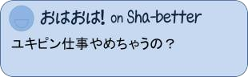
「お姉さんがやりたい仕事は……。 うん、そうだねえ……。
仕事自体には満足しているみたいだけど、どうも私生活に問題があるみたいだ。
納得していないのは、仕事に圧迫された私生活の方だね」
「私生活……」
「テレビの前で言うのはあれだけど、仕事が忙しくて、だいぶ部屋が散らかってないかい？」
「え！？ えっと……そうですね…… あまり片づけられていないかもです……」
「テレビの前で言うのはあれだけど、仕事が忙しくて、だいぶ部屋が散らかってないかい？」
「え！？ えっと……そうですね…… あまり片づけられていないかもです……」
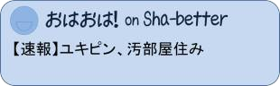
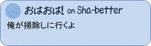
「食事にももうちょっと気を遣わないとね。 まだ若いからいいけど、今は食欲が全然ないみたいだし」
「きっちり3食食べてますけど……」
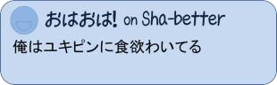
「食欲っていうのはね、あれ食べたい、これ食べたいっていう欲求だよ。 生きるために必要な栄養を取らないといけないと考えるのは食欲とは違う。 きっとお姉さんはそう考えてないね」
「うーん…… そう、ですね……。 ほとんど現場で配られるお弁当をいただくくらいですね……」
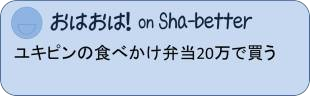
「人間は食事と睡眠がないと死んでしまう。
忙しい仕事だろうけど、まずは食事を楽しむことを考えてみた方がいいよ。
食欲が満たされれば、仕事の方にもいい具合に力が入るはず」
「なるほど……」
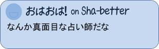
「まずは、与えられる食事をそのまま食べるんじゃなくて、何を食べたいかを考えてみること。 お姉さんの仕事がどうなるかは、そこにかかっているよ」
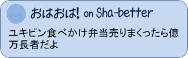
「どんな食べ物がいいとか、あります？」
「そうだねえ……。 ナイフとフォークを使う食事がいいね。
「そうだねえ……。 ナイフとフォークを使う食事がいいね。
普段弁当なら、箸かスプーンばかり使うだろう。
だから、それから一気に離れるために、敢えてナイフとフォークを使ってみるんだ」
「おお……！ 分かりました！ ありがとうございます！ ステラさんの占いって、人生相談みたいな感じですね」
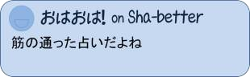
「そうだよ。占いっていうのは統計学に沿ってアドバイスをするのであって、
未来はああなる、こうなるって言うだけじゃない。
それを見越した上で、どうすればその人のためになるのかをアドバイスしてあげないとね」
「今日はステラさんにお会いできてよかったです！ どうもありがとうございました！」
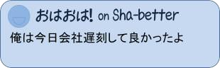
――いやあ、ゆきちゃん、ちょっとお仕事の力を抜かないとね。
それでは次の達人です！ 先日の90歳部門の全国相撲大会で優勝した――。